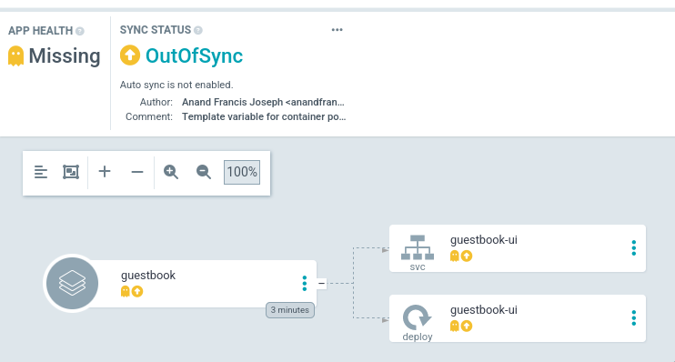

ArgoCD
В данном практическом занятии познакомимся с инструментом доставки приложений - argocd.
Vagrant
Для работы будем использовать следующий Vagrantfile:
Vagrant.configure("2") do |config|
config.vm.define "argocd" do |c|
c.vm.provider "virtualbox" do |v|
v.cpus = 2
v.memory = 4096
end
c.vm.box = "ubuntu/lunar64"
c.vm.hostname = "argocd"
c.vm.network "forwarded_port", guest: 80, host: 8888
c.vm.provision "shell", inline: <<-SHELL
apt-get update -q
apt-get install -yq docker.io docker-compose-v2
usermod -a -G docker vagrant
echo '{"registry-mirrors":["https:\\/\\/mirror.gcr.io"]}' > /etc/docker/daemon.json
systemctl restart docker
curl -LO https://dl.k8s.io/release/v1.30.0/bin/linux/amd64/kubectl
curl -Lo ./kind https://kind.sigs.k8s.io/dl/v0.22.0/kind-linux-amd64
curl -Lo ./argocd https://github.com/argoproj/argo-cd/releases/download/v2.11.2/argocd-linux-amd64
install -m 755 kubectl kind argocd /usr/local/bin/
SHELL
end
end
Данная конфигурация установит на виртуальную машину docker, kubectl и
kind, с помощью которых будет производиться развертывание и управление
кластером kubernetes, а также утилита argocd для управления argocd.
Install
Создадим новый кластер с помощью утилиты kind передав конфигурацию, в которой
указаны дополнительные порты для доступа снаружи:
cat <<EOF | kind create cluster --config=-
kind: Cluster
apiVersion: kind.x-k8s.io/v1alpha4
nodes:
- role: control-plane
kubeadmConfigPatches:
- |
kind: InitConfiguration
nodeRegistration:
kubeletExtraArgs:
node-labels: "ingress-ready=true"
extraPortMappings:
- containerPort: 80
hostPort: 80
protocol: TCP
- containerPort: 443
hostPort: 443
protocol: TCP
EOF
И убедимся что он функционирует:
Creating cluster "kind" ...
✓ Ensuring node image (kindest/node:v1.29.2) üñº
✓ Preparing nodes üì¶
✓ Writing configuration üìú
✓ Starting control-plane üïπÔ∏è
✓ Installing CNI üîå
✓ Installing StorageClass üíæ
Set kubectl context to "kind-kind"
You can now use your cluster with:
kubectl cluster-info --context kind-kind
Not sure what to do next? üòÖ Check out https://kind.sigs.k8s.io/docs/user/quick-start/
$ kubectl cluster-info
Kubernetes control plane is running at https://127.0.0.1:34853
CoreDNS is running at https://127.0.0.1:34853/api/v1/namespaces/kube-system/services/kube-dns:dns/proxy
To further debug and diagnose cluster problems, use 'kubectl cluster-info dump'.
Создадим неймспейс и установим в него argocd:
$ kubectl create namespace argocd
namespace/argocd created
$ kubectl apply -n argocd -f https://raw.githubusercontent.com/argoproj/argo-cd/stable/manifests/install.yaml
customresourcedefinition.apiextensions.k8s.io/applications.argoproj.io created
customresourcedefinition.apiextensions.k8s.io/applicationsets.argoproj.io created
customresourcedefinition.apiextensions.k8s.io/appprojects.argoproj.io created
serviceaccount/argocd-application-controller created
serviceaccount/argocd-applicationset-controller created
serviceaccount/argocd-dex-server created
serviceaccount/argocd-notifications-controller created
serviceaccount/argocd-redis created
serviceaccount/argocd-repo-server created
serviceaccount/argocd-server created
role.rbac.authorization.k8s.io/argocd-application-controller created
role.rbac.authorization.k8s.io/argocd-applicationset-controller created
role.rbac.authorization.k8s.io/argocd-dex-server created
role.rbac.authorization.k8s.io/argocd-notifications-controller created
role.rbac.authorization.k8s.io/argocd-redis created
role.rbac.authorization.k8s.io/argocd-server created
clusterrole.rbac.authorization.k8s.io/argocd-application-controller created
clusterrole.rbac.authorization.k8s.io/argocd-applicationset-controller created
clusterrole.rbac.authorization.k8s.io/argocd-server created
rolebinding.rbac.authorization.k8s.io/argocd-application-controller created
rolebinding.rbac.authorization.k8s.io/argocd-applicationset-controller created
rolebinding.rbac.authorization.k8s.io/argocd-dex-server created
rolebinding.rbac.authorization.k8s.io/argocd-notifications-controller created
rolebinding.rbac.authorization.k8s.io/argocd-redis created
rolebinding.rbac.authorization.k8s.io/argocd-server created
clusterrolebinding.rbac.authorization.k8s.io/argocd-application-controller created
clusterrolebinding.rbac.authorization.k8s.io/argocd-applicationset-controller created
clusterrolebinding.rbac.authorization.k8s.io/argocd-server created
configmap/argocd-cm created
configmap/argocd-cmd-params-cm created
configmap/argocd-gpg-keys-cm created
configmap/argocd-notifications-cm created
configmap/argocd-rbac-cm created
configmap/argocd-ssh-known-hosts-cm created
configmap/argocd-tls-certs-cm created
secret/argocd-notifications-secret created
secret/argocd-secret created
service/argocd-applicationset-controller created
service/argocd-dex-server created
service/argocd-metrics created
service/argocd-notifications-controller-metrics created
service/argocd-redis created
service/argocd-repo-server created
service/argocd-server created
service/argocd-server-metrics created
deployment.apps/argocd-applicationset-controller created
deployment.apps/argocd-dex-server created
deployment.apps/argocd-notifications-controller created
deployment.apps/argocd-redis created
deployment.apps/argocd-repo-server created
deployment.apps/argocd-server created
statefulset.apps/argocd-application-controller created
networkpolicy.networking.k8s.io/argocd-application-controller-network-policy created
networkpolicy.networking.k8s.io/argocd-applicationset-controller-network-policy created
networkpolicy.networking.k8s.io/argocd-dex-server-network-policy created
networkpolicy.networking.k8s.io/argocd-notifications-controller-network-policy created
networkpolicy.networking.k8s.io/argocd-redis-network-policy created
networkpolicy.networking.k8s.io/argocd-repo-server-network-policy created
networkpolicy.networking.k8s.io/argocd-server-network-policy created
$ kubectl patch -n argocd deploy argocd-server --type json -p '[{"op":"add","path":"/spec/template/spec/containers/0/args/-","value":"--insecure"}]'
deployment.apps/argocd-server patched
Также задеплоим ingress-nginx и создадим ресурс ingress для доступа к argocd:
$ kubectl apply -f https://raw.githubusercontent.com/kubernetes/ingress-nginx/main/deploy/static/provider/kind/deploy.yaml
namespace/ingress-nginx created
serviceaccount/ingress-nginx created
serviceaccount/ingress-nginx-admission created
role.rbac.authorization.k8s.io/ingress-nginx created
role.rbac.authorization.k8s.io/ingress-nginx-admission created
clusterrole.rbac.authorization.k8s.io/ingress-nginx created
clusterrole.rbac.authorization.k8s.io/ingress-nginx-admission created
rolebinding.rbac.authorization.k8s.io/ingress-nginx created
rolebinding.rbac.authorization.k8s.io/ingress-nginx-admission created
clusterrolebinding.rbac.authorization.k8s.io/ingress-nginx created
clusterrolebinding.rbac.authorization.k8s.io/ingress-nginx-admission created
configmap/ingress-nginx-controller created
service/ingress-nginx-controller created
service/ingress-nginx-controller-admission created
deployment.apps/ingress-nginx-controller created
job.batch/ingress-nginx-admission-create created
job.batch/ingress-nginx-admission-patch created
ingressclass.networking.k8s.io/nginx created
validatingwebhookconfiguration.admissionregistration.k8s.io/ingress-nginx-admission created
$ kubectl create ingress -n argocd argocd --rule=argo.traefik.me/*=argocd-server:80
ingress.networking.k8s.io/argocd created
И убедимся, что argocd стал доступен:
$ curl argo.traefik.me -so /dev/null -w '%{http_code}'
200
ArgoCD CLI
Получим временный пароль, который сгенерировался после установки:
$ argocd admin initial-password -n argocd
5N8ph9wIc2UjagNq
This password must be only used for first time login. We strongly recommend you update the password using `argocd account update-password`.
После чего авторизуемся под пользователем admin:
$ argocd login argo.traefik.me
WARNING: server certificate had error: tls: failed to verify certificate: x509: certificate is valid for ingress.local, not argo.traefik.me. Proceed insecurely (y/n)? y
Username: admin
Password:
'admin:login' logged in successfully
Context 'argo.traefik.me' updated
Воспользуемся argocd для доставки тестового приложения, которое находится в
git репозитории argocd-example-apps, для этого выполним команду:
$ argocd app create guestbook --repo https://github.com/argoproj/argocd-example-apps.git --path guestbook --dest-server https://kubernetes.default.svc --dest-namespace default
application 'guestbook' created
Данная команда создаст ресурс application в кластере, где будет указан
репозиторий argocd-example-apps, путь до директории guestbook в данном
репозитории, где находятся описания kubernetes ресурсов для деплоя, а также
текущий кластер и неймспейс, в которые развернется приложение.
Посмотреть информацию можно утилитой kubectl или argocd:
$ kubectl get application -n argocd
NAME SYNC STATUS HEALTH STATUS
guestbook OutOfSync Missing
$ argocd app list
NAME CLUSTER NAMESPACE PROJECT STATUS HEALTH SYNCPOLICY CONDITIONS REPO PATH TARGET
argocd/guestbook https://kubernetes.default.svc default default OutOfSync Missing Manual <none> https://github.com/argoproj/argocd-example-apps.git guestbook
$ argocd app get guestbook
Name: argocd/guestbook
Project: default
Server: https://kubernetes.default.svc
Namespace: default
URL: https://argo.traefik.me/applications/guestbook
Source:
- Repo: https://github.com/argoproj/argocd-example-apps.git
Target:
Path: guestbook
SyncWindow: Sync Allowed
Sync Policy: Manual
Sync Status: OutOfSync from (d7927a2)
Health Status: Missing
GROUP KIND NAMESPACE NAME STATUS HEALTH HOOK MESSAGE
Service default guestbook-ui OutOfSync Missing
apps Deployment default guestbook-ui OutOfSync Missing
На текущий момент приложение создано, но состояние в кластере не синхронизировано с состоянием git репозитория. Для синхронизации можно выполнить команду:
$ argocd app sync guestbook
TIMESTAMP GROUP KIND NAMESPACE NAME STATUS HEALTH HOOK MESSAGE
2024-05-28T21:41:35+00:00 Service default guestbook-ui OutOfSync Missing
2024-05-28T21:41:35+00:00 apps Deployment default guestbook-ui OutOfSync Missing
2024-05-28T21:41:35+00:00 Service default guestbook-ui OutOfSync Missing service/guestbook-ui created
2024-05-28T21:41:35+00:00 apps Deployment default guestbook-ui OutOfSync Missing deployment.apps/guestbook-ui created
2024-05-28T21:41:35+00:00 Service default guestbook-ui Synced Healthy service/guestbook-ui created
2024-05-28T21:41:35+00:00 apps Deployment default guestbook-ui Synced Progressing deployment.apps/guestbook-ui created
Name: argocd/guestbook
Project: default
Server: https://kubernetes.default.svc
Namespace: default
URL: https://argo.traefik.me/applications/guestbook
Source:
- Repo: https://github.com/argoproj/argocd-example-apps.git
Target:
Path: guestbook
SyncWindow: Sync Allowed
Sync Policy: Manual
Sync Status: Synced to (d7927a2)
Health Status: Progressing
Operation: Sync
Sync Revision: d7927a27b4533926b7d86b5f249cd9ebe7625e90
Phase: Succeeded
Start: 2024-05-28 21:41:34 +0000 UTC
Finished: 2024-05-28 21:41:35 +0000 UTC
Duration: 1s
Message: successfully synced (all tasks run)
GROUP KIND NAMESPACE NAME STATUS HEALTH HOOK MESSAGE
Service default guestbook-ui Synced Healthy service/guestbook-ui created
apps Deployment default guestbook-ui Synced Progressing deployment.apps/guestbook-ui created
Через некоторое время все ресурсы развернутся и будут находиться в статусе
Healthy:
$ argocd app get guestbook
Name: argocd/guestbook
Project: default
Server: https://kubernetes.default.svc
Namespace: default
URL: https://argo.traefik.me/applications/guestbook
Source:
- Repo: https://github.com/argoproj/argocd-example-apps.git
Target:
Path: guestbook
SyncWindow: Sync Allowed
Sync Policy: Manual
Sync Status: Synced to (d7927a2)
Health Status: Healthy
GROUP KIND NAMESPACE NAME STATUS HEALTH HOOK MESSAGE
Service default guestbook-ui Synced Healthy service/guestbook-ui created
apps Deployment default guestbook-ui Synced Healthy deployment.apps/guestbook-ui created
$ kubectl get deploy,svc,pod
NAME READY UP-TO-DATE AVAILABLE AGE
deployment.apps/guestbook-ui 1/1 1 1 2m33s
NAME TYPE CLUSTER-IP EXTERNAL-IP PORT(S) AGE
service/guestbook-ui ClusterIP 10.96.187.88 <none> 80/TCP 2m33s
NAME READY STATUS RESTARTS AGE
pod/guestbook-ui-56c646849b-j7wf2 1/1 Running 0 2m33s
Добавим также ресурс ingress для доступа к приложению guestbook-ui:
$ kubectl create ingress guestbook-ui --rule=guestbook.traefik.me/*=guestbook-ui:80
ingress.networking.k8s.io/guestbook-ui created
$ curl -s guestbook.traefik.me | grep title
<title>Guestbook</title>
После чего можем удалить приложение:
$ argocd app delete guestbook
Are you sure you want to delete 'guestbook' and all its resources? [y/n] y
application 'guestbook' deleted
$ kubectl get pod
No resources found in default namespace.
$ curl -s guestbook.traefik.me | grep title
<head><title>503 Service Temporarily Unavailable</title></head>
ArgoCD UI
В argocd также есть удобный web интерфейс, который будет доступен по адресу
argo.traefik.me:8888. Авторизуемся в нем под
пользователем admin и паролем, который получили после инсталляции:

После чего проделаем в нем тот же путь, что сделали с помощью cli.
Нажмем Create Application и заполним основные поля:
В источнике укажем репозиторий
https://github.com/argoproj/argocd-example-apps.git
и путь до директории guestbook:
А в качестве destination укажем наш текущий кластер и неймспейс default:
После чего нажмем кнопку Create и увидим состояние нашего приложения:

Нажав на кнопку Sync и далее Synchronize запустится синхронизация ресурсов
в кластере с git репозиторием:
После чего по адресу guestbook.traefik.me:8888 будет доступно данное приложение: